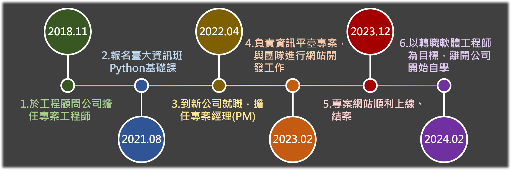

1.個人簡介
您好，我是王維耀，今年28歲。我的個性較為內斂，遇到問題能夠冷靜面對、分析及解決；即使碰到挫折，很快就能恢復狀態，繼續面對難題！
工作方面已有五年左右之經歷，過去於工程顧問公司擔任專案工程師及專案經理(PM)，負責專案之推動、溝通以及時程安排。去年有機會負責臺中市政府委託之資訊平臺開發專案，參與了整個網站上線過程，包含系統分析、UI/UX設計、API規格與資料庫設計、雲端部署等，在與工程師討論專案的過程中，逐漸對軟體工程產生興趣，也對於能夠動手打造網站的工作感到嚮往。

2.為了成為軟體工程師，做過什麼努力？
- 報名臺大資訊系統訓練班，學習Python基礎課程
- 利用YouTube自學，製作靜態網頁
- 持續利用網路資源，學習JavaScript基礎語法
- 曾利用fetch函式透過網路連線整理JSON格式資料，提升工作效率
出自於對撰寫程式語言的興趣，曾經報名臺大資訊系統訓練班的Python語言基礎課程，對於能在課程中解決老師出的題目非常有成就感，也初步培養思考程式運作邏輯的能力。
去年因為參與公司網站開發專案的關係，開始思考未來職涯方向的轉換，為了確認自己是否真的喜歡開發網站，首先在YouTube上學習，使用HTML及CSS撰寫一個
靜態的網頁(連結)，確定自己是喜歡從無到有完成作品的過程。
後續持續在W3Schools及freeCodeCamp等線上平臺學習，並觀看彭彭老師的YouTube課程頻道，學習JavaScript的基礎語法，除了吸收影片內容的知識外，自己也會在不看影片的情況下，獨立完成課程的練習項目。
曾在公司專案中使用AJAX網路連線技術，利用fetch函式抓取JSON格式資料，並使用HTML
DOM在瀏覽器中轉換成純文字，省去將一個個物件資料手動擷取的過程。在思考程式運作邏輯的過程中，也確認自己能夠接受將程式開發工作，作為未來職涯跑道轉換的方向。
透過彭彭老師的YouTube頻道，得知WeHelp訓練營，希望能夠透過WeHelp的職業訓練，進一步達成轉職軟體工程師的夢想。
3.如果參與這個訓練，會怎麼安排學習時間？
向前公司告知轉職意願後，目前已辭職並專心學習，若有幸能參與WeHelp訓練營，我將進行全職學習，除了完成訓練營每周安排進度外，也會持續學習必須具備的知識、技術，時間安排如下表：
| 平假日 |
學習時間 |
完成內容 |
| 平日(週一～五) |
- 上午：08:00~12:00
- 下午：13:00~18:00
- 晚上：19:00~22:00
(晚上學習時間視進度規劃調整)
|
- 完成進度報告
- 完成作業、專案進度
- 學習相關知識與技術
|
| 假日(週六、日) |
- 上午：09:00~12:00
- 下午：13:00~18:00
(假日學習時間視進度規劃調整)
|
- 補足作業、專案進度
- 學習相關知識與技術
|
主要以平日白天08:00~18:00(共9小時)為基本學習時間，晚上19:00~22:00(共3小時)則依據當天狀況彈性調整學習時間，並以完成當天作業或專案進度規劃為主要目標；假日學習時間亦以白天為主，補足平日未完成的作業及專案進度為目標，其餘期間則用來持續學習相關知識與技術。
4.是否有想要加入的公司？為什麼想加入該公司？
由於是跨領域轉職，最缺乏的就是實戰經驗，因此有歷練的機會我都願意嘗試，目前尚未有明確想加入的公司或團隊。
不過，未來成為軟體工程師，我希望能加入的公司是以自行研發產品為經營方向，因為相較於受到上游廠商、業主的制約，我更喜歡為公司參與打造屬於自己團隊的產品，且最好可以從中學習軟硬體整合技術，能看到實體運作的成果，我想一定非常有成就感！
5.請描述一件產生明顯負面情緒的經歷，如何處理該情緒？
在前公司團隊中，我是屬於較資深的成員，因此常被主管要求帶領團隊執行專案。在某次執行重點專案，將任務分配給團隊成員後，因某一位成員在執行過程卡關許久且未提出問題，導致最後需要團隊加班完成，由於時程壓力，知道任務可能無法如期完成的我實在既憤怒又沮喪。
不過為了不被情緒影響工作，我還是馬上將注意力轉移在解決問題上，將原本成員卡住的任務拆解成數個小任務，並分配給團隊成員，最後還是順利完成專案。此事件後我也學到，如果有負面情緒時，也許可以先冷靜釐清產生負面情緒的原因，針對此原因思考解決方法，或者評估值不值得如此生氣、難過，也藉由思考過程轉移注意力，快速脫離負面情緒。
6.關於這份申請網頁，分享一個開發時的技術心得。
此份申請書主要以HTML及CSS技術進行開發，在開發過程中大部分問題都能靠以往學習經驗解決，其中卡關比較久的部分，在於將中間的文字方塊(textbox)進行水平置中並垂直排列。
原來的想法是，將textbox的外容器設定display:
flex屬性後，再利用justify-content:
center，即可將容器內的textbox水平置中且垂直排列，但是因為flex預設是水平排列，儘管設定容器內容水平置中，textbox還是會以水平排列的方式呈現。
後來利用flex-direction:
column屬性，將預設的水平方向排列改為垂直方向排列，再利用align-items:
center屬性(因應排列變成垂直方向)，即完成將textbox水平置中並垂直排列的設計。
7.請用簡短兩三句話，描述對你而言，最重要的一項人際交往原則。
尊重彼此想法，並且待以誠信。
8.其他想要對我們說的事情？
為了轉職軟體工程師，我已經下定決心辭職並努力學習，無論是否錄取WeHelp訓練營的一員，我依然會持續學習、轉換跑道，畢竟在軟體工程領域，不管在轉職前後都必須要持續精進，抱持著必須持續學習的覺悟才能將這條路走得長久。
最後，也感謝彭彭老師、WeHelp團隊的費心審閱！